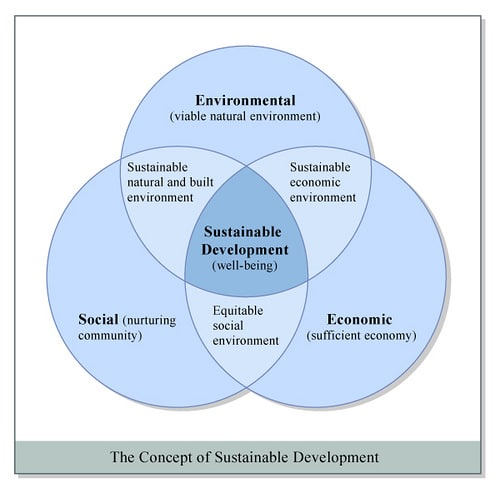

The growth of country' s economy as well as the non-economic sectors, like -
health, education etc.
This should be time conserving, nature friendly and money effortly for everyone.
This don' t have to for greed of anyone but, this have to be for needs of everyone.
For Exapmle:- Economic development, Educational institutions etc.
Sustainable Development (SD):
The development which done by the taking care of future needs without
compromising with the present needs.
Taking care of the environment, its resources, without renouncing social and economic progress
For Exapmle:- Wind Energy, Solar Energy etc.
Views of Sustainable Development:
Advantages and Disadvantages of Sustainable Development
Disadvantages of SD :
Costs
Although intentions are good, carrying them out costs work because it is about reducing or completely dispensing with
energy that already supplies part of the population with a new one, changing infrastructure, consumption habits and this
whole transition can be very expensive
For Exapmle:- The countries of the first world would not have much difficulty in adopting new forms of energy, but in the developing
nations, it would not be possible to assume these expenses.
Unemployment in some areas.
Changes to preserve and care for ecosystems and biodiversity can cause several industries to reduce their activities or,
in the last case, stop them altogether. This can bring unemployment for many people who have dedicated their whole lives
to work in a single sector, such as the coal industry.
Fragile commitment.
A more environmentally friendly industry is more costly and difficult to meet because , there is a risk that the
commitment made with society is not so serious. This inconvenience would occur because the results obtained are
generally long-term, but in places that are just developing, it may not be possible to wait so long.
More requirements.
The companies, plants, factories and others responsible for affecting the environment would have more requirements to
function, such as reducing their carbon dioxide emissions or correct treatment of their waste, and although they seem
necessary and common sense, not everyone could meet them without compromising their efficiency and their work, in
addition to the entry requirements would be very high for small companies.
Advantages of SD :
In an environment that tends to sustainability , governments must be responsible and citizens are more aware and ask important questions in their role as consumers.
Lower environmental impact
it involves reducing the emissions of gases that create phenomena such as acid rain or global warming, it directly
a large part of human activities are responsible for the deterioration of the environment, adopting this ideology entails doing something to reduce pollution, which can bring positive results such as better air quality, more green areas, the preservation of biodiversity of the planet, the subsistence of more species, etc.
Guarantee of a better future.
actions are taken to reduce the effect of the warming of the land or other events such as the melting of the poles or
changes in such an abnormal climate, guarantees that the Next generations of people can have an adequate life in the
future.
ensuring that the planet’s natural resources are not exhausted and there is enough to be renewed or, if not, that they
last for a good number of years, as in the case of oil or gas. natural.
Pillars of SD :

The Environmental Pillar
The environmental pillar often gets the most attention. Companies are focusing on reducing their carbon footprints, packaging waste, water usage and their overall effect on the environment.
Companies have found that have a beneficial impact on the planet can also have a positive financial impact by Lessening the amount of material used in packaging usually reduces the overall spending on those materials.
For Exapmle:- Walmart keyed in on packaging through their zero-waste initiative, pushing for less packaging through their supply chain and for more of that packaging to be sourced from recycled or reused materials.
Other businesses that have an undeniable and obvious environmental impact, such as mining or food production, approach the environmental pillar through benchmarking and reducing.
The all-in-costs of wastewater, carbon dioxide, land reclamation and waste in general are not easy to calculate because companies are not always the ones on the hook for the waste they produce.
This is where benchmarking comes in to try and quantify those externalities, so that progress in reducing them can be tracked and reported in a meaningful way.
The Social Pillar
The social pillar ties back into another poorly defined concept: social license. A sustainable business should have the support and approval of its employees, stakeholders and the community it operates in.
The approaches to securing and maintaining this support are various, but it comes down to treating employees fairly and being a good neighbor and community member, both locally and globally.
On the employee side, businesses refocus on retention and engagement strategies, including more responsive benefits such as better maternity and paternity benefits, flexible scheduling, and learning and development opportunities.
For community engagement, companies have come up with many ways to give back, including fundraising, sponsorship, scholarships and investment in local public projects.
On a global social scale, a business needs to be aware of how its supply chain is being filled.
Many of the large retailers have struggled with this as public outrage over tragedies like the Bangladesh factory collapse, which have illustrated previously unaccounted for risks in sourcing from the lowest-cost supplier.
The Economic Pillar
The economic pillar of sustainability is where most businesses feel they are on firm ground.
To be sustainable, a business must be profitable.
profit cannot trump the other two pillars. In fact, profit at any cost is not at all what the economic pillar is about.
Activities that fit under the economic pillar include compliance, proper governance and risk management.
This pillar is also referred to as the governance pillar, referring to good corporate governance.
This means that boards of directors and management align with shareholders' interests as well as that of the company's community, value chains, and end-user customers.
With regard to governance, investors may want to know that a company uses accurate and transparent accounting methods, and that stockholders are given an opportunity to vote on important issues.
They may also want assurances that companies avoid conflicts of interest in their choice of board members, don't use political contributions to obtain unduly favorable treatment and, of course, don't engage in illegal practices.
It is the inclusion of the economic pillar and profit that makes it possible for corporations to come on board with sustainability strategies.
The economic pillar provides a counterweight to extreme measures that corporations are sometimes pushed to adopt, such as abandoning fossil fuels or chemical fertilizers instantly rather than phasing in changes.